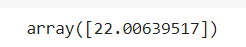
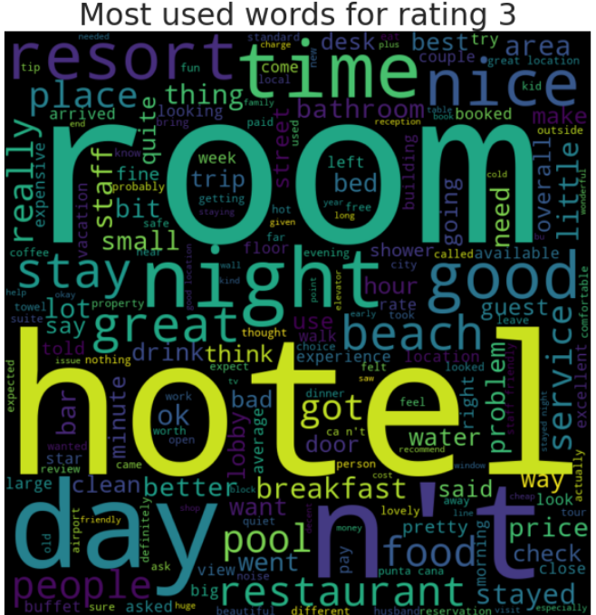
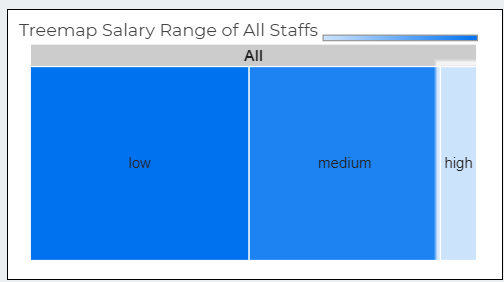

Data Science Portfolio by
Khairudin Yaacob
Exploratory Data Analysis & Visualization

Telco
Using Data Analytic Techniques To Visualize Telco Churn
The datasets and complete code can be found at the link below.
Dataset link: https://raw.githubusercontent.com/telco_customer_churn_dataset.csv
Project link: https://colab.research.google.com/drive/1RZ8pzXqTyz7YOFr2nWi8fswV_pmmzHiQ?usp=sharing
The method I am using to analyze the dataset is by using Data Science OSEMN framework. It can be best explained by this article writen by Dr. Lau here.
Importing Python Libraries
First, we need to import the necessary python libraries for this analysis. These include the basic packages such pandas, seaborn and matplotlib.
import pandas as pd
import seaborn as sns
import matplotlib.pyplot as plt
Data Source
The data that I am using for this portfolio is the raw dataset sample given in the class as per link dataset before. In a quick glance it contains columns and rows with mostly words & numbers in the table. I will use Python to perform all data analysis and visualization. This data is originally in a CSV file and we will convert it into a data frame by using Pandas.
df = pd.read_csv('https://raw.githubusercontent.com/theleadio/datascience_demo/
master/telco_customer_churn_dataset.csv')
df.sample(5)
Data Scrubbing
Next, we will check if the columns have any null values.
df.isnull().sum()
The important thing is we do not have or minimal null values in the columns, so we can proceed with other cleaning.
Next we look data type of each value in the columns
df.info()
Looking at each 20 column value data are object input except for 'SeniorCitizen', 'tenure' & 'MonthlyCharges' columns. For 'customerID' columns since that data type object is unique representing each subscriber, we do not need to clean this column and leave as it is. Accurate analyzing, require data to be in either integer or float which we will do.
Let check the rest of the 17 columns input data, and see if we can change it from object to numerical. We group the columns as col tor easier call up and use the function unique to check.
col = ['gender', 'SeniorCitizen', 'Partner', 'Dependents', 'PhoneService', 'MultipleLines', 'InternetService', 'OnlineSecurity', 'OnlineBackup', 'DeviceProtection',
'TechSupport', 'StreamingTV', 'StreamingMovies', 'Contract', 'PaperlessBilling', 'PaymentMethod', 'TotalCharges', 'Churn']
for column in col:
print(column, ':', df[column].unique(), '\n'))
There is a mixed input of data inside the table. We try to clean from left to right column and group it as much as we can for conversion/mapping in a simpler coding. First column 'gender'', we can convert Female, Male data object to numerical 0 & 1 respectively using mappping function as per below.
df['gender'] = df['gender'].map({"Female":0, "Male":1})
binary_columns = ["Partner", "PhoneService", "Dependents", "PaperlessBilling", "Churn"] for column in binary_columns: df[column] = df[column].map({"No": 0, "Yes": 1})
df['MultipleLines'] = df['MultipleLines'].map({"No phone service":0, "No":0, "Yes":1, })
df = pd.get_dummies(data=df, columns=['InternetService'])
df = pd.get_dummies(data=df, columns=['Contract'])
df = pd.get_dummies(data=df, columns=['PaymentMethod'])
binary2_columns = ['OnlineSecurity', 'OnlineBackup', 'DeviceProtection', 'TechSupport', 'StreamingTV', 'StreamingMovies']
for column in binary2_columns:
df[column] = df[column].map({"No": 0, "Yes": 1, "No internet service":0})
df['TotalCharges'] = pd.to_numeric(df['TotalCharges'], errors="coerce")
df.sample(5)
df.info()
All columns has being converted into integer and float for easy analyzing, now to check any missing data in the table. There is 11 missing input in the 'TotalCharges' column, by comparing 7,043 sample from other columns that has non null vales with 7,032 samples in 'Total Charges' column.
Since it is only 11 input from the total 7,043 count, i have decided to drop the missing row value from the column by using the function dropna since it is immaterial.
df = df.dropna()
Explore Data
For exploring the data after the data scrubing, i would like to use the descriptive analysis function on the data, so let's try that.
df.describe()

We also can check that the all sample rows has being reduced to 7,032 input after dropna function
General summary on the descriptive analysis based on the describe function shown
1. The subscriber is divided around 50/50 by male & female
2. the standard deviation churn is low with 0.441 which means the mean has +- deviation of 0.441782 from the mean. The lower is better.
3. The Mean of 26.57% churn rate means that out of 7032 samples, around a quarter of total sample churned from subscribing from the telco line.
4. The average tenure for each customer out of 7032 samples is about 32 months (2 years and 8 months).
Another way to explore data is using test significant variables.Testing significant variables often is done with correlation.
The correlation can be find by using heatmap. By displaying a panda dataframe in Heatmap style, a visualization that is very useful in visualizing the concentration of values between two dimensions of a matrix. This helps in finding patterns and gives a perspective of depth.
Visualization Data as Heatmap
Lets try the heatmap function as per below.
sns.set(rc={'figure.figsize':(20,20)}) corr = df.corr() sns.heatmap(corr, annot=True,fmt=".2f")
From the heatmap, we can see a couple interesting correlation, the data churn and Contract_month_to month has a high correlation. This correlation could help us to find a batter model predictor for churn later on.
While we also could point out that churn has a compratively negative relationship with tenure as well
Lastly, we will utilise data visualisation to help us to identify significant patterns and trends in our data. We can gain a better picture through simple charts like line charts or bar charts to help us to understand the importance of the data.
Visualization Data as Countplot
Here we use Countplot, visualization that is very useful to show the counts of observations in each categorical bin using bars. Since we are focusing on Churn data, I will use all other columns as the x axis in the countplot to find which column has best relatioship with the churn with the code as per below.
main, subplots = plt.subplots(1, 4, figsize=(20,6))
sns.countplot(data=df, x="gender", hue="Churn", ax=subplots[0])
sns.countplot(data=df, x="SeniorCitizen", hue="Churn", ax=subplots[1])
sns.countplot(data=df, x="Partner", hue="Churn", ax=subplots[2])
sns.countplot(data=df, x="Dependents", hue="Churn", ax=subplots[3])
Findings from countplots
1. Gender Female, Male has around the same count to churn
2. Senior Citizens, Partner and Dependents has the same trend where numbers of churning is quite low compare to non churning.
3. Subcscriber who has Internet Service Fiber Optic to churn are are not that different that much.
4. PhoneService has different trend altogether, where phone service and non phone service are already varies so much. Subscribers with phone service shows a large difference in not churning than churn
Visualization Data as Boxplot
Another visualization method, create boxplot, a visualization for graphically depicting groups of numerical data through their quartiles. We wil use data x= Churn data, I will use other columns as the y axis in the boxplot as per below
main, subplots = plt.subplots(1,3, figsize=(16,10))
sns.boxplot(data=df, x='Churn',y='tenure',ax=subplots[0])
sns.boxplot(data=df, x='Churn',y='MonthlyCharges',ax=subplots[1])
sns.boxplot(data=df, x='Churn',y='TotalCharges',ax=subplots[2])
The box extends from the Q1 to Q3 quartile values of the data, with a line at the median (Q2). The whiskers extend from the edges of box to show the range of the data.
Findinds from boxplot
1. You can find outliers in both tenure and Total Charges, they are data outside of Q3 as per the graph.
2. Both tenure and Total Charges to churn has also low 1st quartile percentage till the median
3. Monthly charges has a higher range in churn than the non churner.
Model Data
In modelling the data, not all your features or values are essential to predicting your model. What you need to do is to select the relevant ones that contribute to the prediction of results. For accuracy, we need to use as much data as we can but relevant as well. Here I will train models to forecasting future values.
As we work with datasets, a machine learning algorithm works in two stages. We usually split the data around 20%-80% between testing and training stages. We split a dataset into a training data and test data. For the columns i choose to include 'SeniorCitizen', 'Partner', 'PhoneService', 'DeviceProtection', 'OnlineSecurity', 'OnlineBackup', 'TechSupport', 'PaperlessBilling', 'tenure', 'MonthlyCharges', 'TotalCharges'.
Firstly, we group the columns involved as train_data, the features, data we used to predict the train, Churn as the train labels as it is what we wanted to train on.
columns = ['SeniorCitizen', 'Partner', 'PhoneService', 'DeviceProtection', 'OnlineSecurity', 'OnlineBackup', 'TechSupport', 'PaperlessBilling', 'tenure', 'MonthlyCharges', 'TotalCharges' ] train_data = df[columns] train_labels = df['Churn']
Importing Python Libraries
As usual, we need to import the specific pyton libraries which is sklearn train_test_split, decision tree and metrics as per below
from sklearn.model_selection import train_test_split
from sklearn import tree
from sklearn import metrics
X_train, X_test, y_train, y_test = train_test_split(train_data, train_labels, test_size=0.3, random_state=1)
model = tree.DecisionTreeClassifier(max_depth = 3)
model.fit(train_data, train_labels)
And now we used the sklearn predictions in predict the response for test dataset. In addition we will we use metrics.accuracy_score calculate the model accuracy.
y_pred = model.predict(X_test)
print ("Accuracy:", metrics.accuracy_score(y_test, y_pred))
Here after filtering and cleaning the data, we would get a 79.5% of accuracy if to model it in which i think that's a good indicator.
Visualizing Model Data as Decision Trees
Additionally, You can visualize the Decision Tree alogorithm using the sklearn graphiz library.
Importing Python Libraries
First we import libraries sklearn graphviz function for display and plot the tree
from sklearn.model_selection import train_test_split
from sklearn import tree
from sklearn import metrics
fcolumns = list(train_data.columns) dot_data = tree.export_graphviz(model, out_file=None, feature_names=columns, class_names=["No", "Yes"], filled= True, rounded = True) graph = graphviz.Source(dot_data) graph
Findinds from decison tree
1. Subscribers that has tenure that 16.5 months and monthly charges mroe than 68.25 are likely to churn with 35 out of the sample 7,032.
2. The probability increases of not churning if their tenure with the telco more than 15.5 months.
Using The Model
Lets recap the model with the colums involved are 'SeniorCitizen' 'Partner', 'PhoneService', 'DeviceProtection', 'OnlineSecurity', 'OnlineBackup', 'TechSupport', 'PaperlessBilling', 'tenure', 'MonthlyCharges', 'TotalCharges'.
Let's take a scenario where subscriber has phone service, Device protection,online backup,tech support, paperlessbilling, 12 months contract, Monthly Charges of RM80 and Total Charges of RM 1000, what is the prediction of churning?
"SeniorCitizen" :0,
"Partner": 0,
"PhoneService": 1,
"DeviceProtection": 1,
"OnlineSecurity": 0,
"OnlineBackup": 1,
"TechSupport":1,
"PaperlessBilling": 1,
"tenure": 12,
"MonthlyCharges": 80,
"TotalCharges":1000
Lets put scenario input inside model.prediction and see how it goes
model.predict([[0, 0, 1, 1, 0, 1, 1,1,12,80,1000]])
Interpreting Data
The result 1 means customers with the scenario given would churn with accuracy model 79.5%.
Call To Actions/Suggestion to Telco Company To Retain Customers
1. Increase clients with longer Tenure - To attract them by roll out better packages locking in long term contracts.
2. Reduce Monthly Charges - To give some sort loyalty discounts or points to reduce monthly charges.
3. Reduce Total Charges - To set competitive charges in line with the market, ike service charges, internet charges, overseas charges etc.
Conclusion
Other than relying on the model, we also need to consider external factor like current situation like this COVID, market competitiveness of Telco in the country and technology. One thing comes in mind is people are working from home & students are learning online, telcos need to readjust their packages to suit the current market need.
Word Clouds
Tweets
Making Word Clouds Based On Trump Tweets
The datasets and complete code can be found at the link below.
Dataset link: https://www.kaggle.com/austinreese/trump-tweets?select=realdonaldtrump.csv
Project link: https://colab.research.google.com/drive/1ib-FHUnztA8MuVPSOVXnyGB-pha3j0kY?usp=sharing
The method I am using to analyze the dataset is by using Data Science OSEMN framework.
In this portfolio, I am interested with words is he using the most in his tweets. How is he choosing these particular words to send his powerful messages, which effect instantly on stock market and the economic. Using visualization, creating a wordcloud with Donald Trump’s recent tweets to explore his most used words.
Importing Python Libraries
First, we need to import the necessary python libraries for this analysis. These include the basic packages such as pandas, numpy, os import path, PIL import inage, wordcloud as well stopwords,imagecolor generator and urllib and lastly matplotlib pyplot and inline.
import numpy as np
import pandas as pd
from os import path
from PIL import Image
from wordcloud import WordCloud, STOPWORDS, ImageColorGenerator
import urllib
import matplotlib.pyplot as plt
% matplotlib inline
Data Source
The data that I am using for this portfolio is the raw dataset in kaggle as per link prior. It is stated that the tweets are from July 2020 to October 2020 In a quick glance it contains columns and rows with mostly words & numbers in the table. I will use Python to perform all data analysis and visualization. This data is originally in a CSV file and we will convert it into a data frame by using Pandas and let’s take a look at what we have.
df = pd.read_csv("https://raw.githubusercontent.com/kudin36/DataScience
/main/realdonaldtrump.csv")
df
Data Scrubbing
Next, we will check if the columns have any null values.
df.isnull().sum()
There are NaN values in 'mentions'and 'hashtags'column but our focus is the ‘content’ column which contains the tweets. We can drop the other columns but I will just keep them in the data frame since they won’t impact my wordcloud.
Next we look data type of each value in the columns focusing on the 'content' column.
df.dtypes
stopwords = set(STOPWORDS)
Visualizing Data as Wordcloud
One of the function that we want use as one of the parameter is stopwords where it will ignore commonly used words such “the”, “a”, “an”, “in” Set it and use another line code with the plotting pyplot,Imagegenerator, and other parameters like width and background color
stopwords = set(STOPWORDS)
def wordcloud_generator(data, title=None):
wordcloud = WordCloud(width = 1000, height = 1000,
background_color ='white',
stopwords=stopwords,
min_font_size = 10
).generate(" ".join(data.values))
# plot the WordCloud image
plt.figure(figsize = (16, 20), facecolor = None)
plt.imshow(wordcloud, interpolation='bilinear')
plt.axis("off")
plt.tight_layout(pad = 0)
plt.title(title,fontsize=30)
plt.show()
Now we use wordcloud function and put a title on the image "Most used words in Trump Tweets"
wordcloud_generator(df['content'], title="Most used words in Trump Tweets")
Here, we could see trump words in different sizes, is organized as per picture above. For a better visualization, I want to use a mask image Trump and the words are organized accordingly to the mask body. Mask Images can be foound in google image, preferably a PNG as it will be nicer. Using the imported libraries urlib and numpy, we can callup the image mask as per line below
trump_mask = np.array(Image.open(urllib.request.urlopen('https://raw.githubusercontent.com/kudin36
/DataScience/main/masktrump.png')))
fig = plt.figure(figsize=(16, 20))
plt.imshow(trump_mask, cmap=plt.cm.gray, interpolation='bilinear')
plt.axis('off')
plt.show()
Looks like the image mask is ok, here we proceed to called again the line to visualize the word cloud but with a new parameter trump_mask
def wordcloud_generator(data, title=None):
wordcloud = WordCloud(width = 1000, height = 1000,
background_color ='white',
mask=trump_mask,
stopwords=stopwords,
min_font_size = 10
).generate(" ".join(data.values))
# plot the WordCloud image
plt.figure(figsize = (16, 20), facecolor = None)
plt.imshow(wordcloud, interpolation='bilinear')
plt.axis("off")
plt.tight_layout(pad = 0)
plt.title(title,fontsize=30)
plt.show()
wordcloud_generator(df['content'], title="Most used words in Trump Tweets")
Alright, now we have word cloud of Trump Tweet in his own Trump mask image with his iconic and unique hairstyle.
Interpreting Data
Whoever been keeping tabs on Donald’s twitter, will probably be familiarised with his tweets. Most tweeted words contain “Biden”, “America Great” and “Fake News”. It is also interesting that even after he won presidential election he still keep mentioning “BarackObama” which is the most tweeted words.
Conclusion
Wordclouds are useful for data exploration and analysis in NLP projects. They are great to visualize words in a creative way. This visualization can add values to other projects as well.
Machine Learning & Linear Regression

Social Media
Forecasting Budget For Social Media Ads
The datasets and complete code can be found at the link below.
Dataset link: https://github.com/theleadio/datascience_demo/blob/master/social-ads-raw.xlsx?raw=true
Project link: https://colab.research.google.com/drive/1FwrvrVJe55ZeUilmI-JSnqT0BwHY84OC?usp=sharing
I will be using the Data Science OSEMN framework to analyze the data. Here I want to show how to use linear regression for modelling.
Importing Python Libraries
First, we need to import the necessary python libraries for this analysis. These include the basic packages such pandas, seaborn and matplotlib. In addition pyplot and sklearn linear model
import pandas as pd import seaborn as sns import matplotlib.pyplot as plt from sklearn.linear_model import LinearRegression
Data Source
The data that I am using for this portfolio is the raw dataset sample given in the class as per link dataset before. From the look if it, contains columns and rows with numbers and 2 columns with numbers in the table. I will use Python to perform all data analysis and visualization. This data is originally in a CSV file and we will convert it into a data frame by using Pandas.
df = pd.read_excel("https://github.com/theleadio/datascience_demo/
blob/master/social-ads-raw.xlsx?raw=true")
df
Our focus is the will be social ads column facebook, google & instagram column
Data Scrubbing
Next, we will check if the columns have any null values.
df.isnull().sum()
Look like no NaN values. So we can proceed with other cleaning.
Next we look data type of each value in the columns
df.info()
Looking at each 7 column value data are integer and float input except for 'size' & 'area' columns We try to convert the 2 columns into numerical. We group the columns as col for easier call up and use the function unique to check.
col = ['size', 'area']
for column in col:
print(column, ':', df[column].unique(), '\n')
'size' column has 2 input while 'area' column has 3. First column 'size'', we can convert large, small data object to numerical 1 & 0 respectively using mappping function as per below.
df['size'] = df['size'].map({"large":1, "small":0})
df
However upon checking, after using the map function, the column size has NaN values due to the data is an immutable type and cannot be converted. To circumvent this we need to create a new column to map the the data large, small into 1 & 0. In addition we delete the coding previously because that's not what we want.
df['is_large'] = df['size'].map({"small":0, "large":1})
df
Next one is 'area' columns which have ['rural' 'urban' 'suburban']. Since the input has unique rural,urban & suburban we cannot change it to 0,1 since the input does not mean one input is better than the other. To solve this need to create dummy variables for these columns
Another way of creating dummy is create another group set of dummy columns and mantaining the original column as it is , however we need to join that new group columns to df to make it work.
df = df.join(area_dummies)
df = df.join(area_dummies)
Looks like a good table for analyzing.
Explore Data
For exploring the data after the data scrubing, I would like to use scatterplot to visualize the data. It is a visualization technique that shows the relationship between two numerical variables. As we can see the three column google, facebook & instagram has continous number as its input, thus can be use in a scatter plot.
Visualizing Data as Scatterplot
We plot 3 scatterplot, column google, facebook & instagram side by side. We first called up the body of the plot as per line below using the plt library to check.
fig, subs = plt.subplots (1,3)
Look like a bit cramp where labels overlap. Let's add figsize parameter to widen the plot size.
fig, subs = plt.subplots (1,3, figsize=(15,8))
Looks better, so set scatter plot with the size that we check before using the plot function regplot, set column google, facebook and instagram as x axis, 'sales'column as our y axis to see how each of their relationship.
fig, subs = plt.subplots (1,3, figsize=(15,8))
sns.regplot(data=df, x="google", y="sales", ax=subs[0])
sns.regplot(data=df, x="facebook", y="sales", ax=subs[1])
sns.regplot(data=df, x="instagram", y="sales", ax=subs[2])
Findinds from scatterplot
1. All three social ads has positive relationship with sales.
2. However google a lot more point sets near to the line,facebook line is similar to google, but more disperse, while instagram is more scatter than all of them.
3. In addition, instagram has more weak points where some points are futher than the rest of them which show a really low positive relationship.
Now after the scrubing and a bit of exploration of the data, we can moving on to modelling data.
Model Data
In modelling the data, not all your features or values are essential to predicting your model. What you need to do is to select the relevant ones that contribute to the prediction of results. For this portfolio, i will be using Linear Regression function to forecast future values
To explain linear regression can be taxing & difficult for a non maths background like me. But to summarize in a simple, we can relate to the mathematical function y=ax+b that we learn in schools.
Linear regression follows the assumption that with all the data you’ve found so far, you can draw a line [y = ax + b] to identify a trend with these points and then figure out what y is at any value that x is.
For the workings & formulas behind it, you can read further on the link here.
Anyway we set column social ads as our x function, y to sales. Here we want how much revenue driven by the budget. Let's try first google as per line below.
features = ['google']
x = df[features]
y = df['sales']
model = LinearRegression() model.fit(x, y)
Now we have a linear regression, we can check their R-Square, Intercept & Coefficient as per line below.
print("R Square", model.score(x,y))
print("Intercept", model.intercept_)
print("Coefficient", model.coef_)
In general, R Square is basically the evaluing the performance of the model by hows how well the data fit the regression model, Intercept as in the b in y=ax+b function is the constant when x=0 , while coefficientis the a in y=ax+b, the costant that which the variables multiplied.
Now we have input in the equation,let do some forecasting.
Just say we allocate 100 units in the google social ads.
#y = ax + b
#let allocate google budget 100
(0.04576465*100)+7.032593549127695
Now we have have model output, the y in y=ax+b.
Let also do a forecasted revenue based on the y that we get. We assume unit price of the unit sold as RM 2,500.
unit_price = 2,500
expected_revenue = 11.609058549127695*1000*unit_price
print(F"Expected Revenue: {expected_revenue:,.2f}")
And we get
Now we can advanced model on incorporating the other 2 social ads together. Lets do the coding before with adding facebook & instagram column in features and run the linear regression again.
features = ['google', 'facebook', 'instagram']
x = df[features]
y = df['sales']
model = LinearRegression()
model.fit(x, y)
print("R Square", model.score(x,y))
print("Intercept", model.intercept_)
print("Coefficient", model.coef_)
Findings from Model
This Rsquare is higher than first one, meaning more variables make the model more accurate
The Intercept is lower, the constant of the equation reduce significantly. From the coeffticient, facebook has a higher multiplier than google, instagram has negative coefficient, which reduceds the value if used
Let do a further and better model. Lets incorporate the other is_large and the dummy columns into our model.
We redo the linear regression coding as well adding with new features and check the R2, Intercept and Coefficient.
features = ['google', 'facebook', 'instagram', 'is_large', 'rural', 'suburban', 'urban']
x = df[features]
y = df['sales']
model = LinearRegression()
model.fit(x, y)
print("R Square", model.score(x,y))
print("Intercept", model.intercept_)
print("Coefficient", model.coef_)
Findings from Model
1. This Rsquare is increase a bit, still a better model to use
2. The Intercept is lower a bit,it shows minimal changes in the multiplier
3. From the coeffticient, is_large and urban column has positive relationship, while rural and suburban has negative relationship. Based on the this, we can find rank the social ads variables importance when we do model.
1. Facebook
2. Google
3. urban
4. is_large
5. rural
6. sub_urban
7. instagram
Let take a scenario, where we have 100 units of social ads to have, allocate to which social ads and segment to maximize the revenue.
Maximize profit method - allocate all in facebook since it has the largest positive coefficient, and also choose urban & is_large as well.
model.predict([[0, 100, 0, 1, 0, 0, 1]])

unit_price = 2500
expected_revenue2 = 22.00639517 * 1000 * unit_price
print(F"Expected Revenue: {expected_revenue2:,.2f}")
Based on this model, we know the expected revenue by maximizing facebook we will get RM 55,015,987.92, since there is no limit which to prioritize.
Findings from Model
1. More variables are better for better model, proven by the increasing R Square value each time column are added.
2. In the model, we need to find columns that has positive coefficient, to rank which is better for the forecasting.
Interpreting Data
Sugesstion on Social Ads Budget.
1. Focus on Facebook and Google social ads for more revenue.
2. Focus on large segment and urban locality to increase sales .
Alright, i find that linear regression is quite a fun model to play around. In addition, I believe you don't need to memorize the complexity of Linear Regression, but learn how to apply for it. So don't be afraid of the technicality behind it.
Sentiment Analysis

TripAdvisor
Sentiment Analysis On Tripadvisor Reviews
The datasets and complete code can be found at the link below.
Dataset link: https://raw.githubusercontent.com/master/tripadvisor_hotel_reviews.csv
Project link: https://colab.research.google.com/drive/1rVvU4m0lTDYt8YQTcAjZjBCxZWvXAcXm?usp=sharing
The method I am using to analyze the dataset is by using Data Science OSEMN framework.
For this project, I am interested with evaluating ratings/reviews in TripAdvisor website by using Sentiment Analysis.
Importing Python Libraries
First, we need to import the necessary python libraries for this analysis. These include the basic packages such as pandas, seaborn, matplotlib. We will be importing as well wordcloud, nltk and specifically the VADER Sentiment Analysis (Valence Aware Dictionary and Sentiment Reasoner)
import pandas as pd
import seaborn as sns
import matplotlib.pyplot as plt
from wordcloud import WordCloud
import nltk
from nltk.sentiment.vader import SentimentIntensityAnalyzer
nltk.download('vader_lexicon')
Data Source
The data that I am using for this portfolio is the raw dataset in github , sample from class as per link prior. Looking at the table, it has 2 columns reviews and ratings which in words and numbers respectively. I will use Python to perform all data analysis and visualization. This data is originally in a CSV file and we will convert it into a data frame by using Pandas and let’s take a look at what we have.
df = pd.read_csv('https://raw.githubusercontent.com/theleadio/
datascience_demo/master/tripadvisor_hotel_reviews.csv')
df.sample(5)
Data Scrubbing
Next, we will check if the columns have any null values.
df.isnull().sum()
Both columns do not have null values. Next we look data type of each value in the columns.
df.info()
Explore Data
Now for exploring the data after the data scrubing, I would like to use countplot to visualize the data. It is a visualization technique that very useful to show the counts of observations in each categorical bin using bars. Since we are focusing on Rating data, I will use ratings columns as the x axis in the countplot.
Visualization Data as Countplot
sns.set(rc={'figure.figsize':(10,8)})
sns.countplot(data=df, x='Rating', color='blue')
Findings from countplot
1. From the countplot, we can see a couple interesting counts. Most reviews has rating 4 and 5, which show favorable view on services used through tripadvisor.
2. While we also could point out that rating 1,2 and 3 has around the same count, but if we totalled it up, total rating 1 - 3 has roughly the same as rating 4. It shows that unfavourable/mediocre ratings count for 30% of the review, which could be alarming to tripadvisor.
Visualization Data as Word Cloud
Create Word Cloud, a visualization technique for texts that are natively used for visualizing the tags or keywords from the websites. These keywords typically are single words that depict the context of the webpage the word cloud is being made from. These words are clustered together to form a Word Cloud. Lets use the word cloud coding and set the plot as per coding below.
def wordcloud_generator(data, title=None):
wordcloud = WordCloud(width = 800, height = 800,
background_color ='black',
min_font_size = 10
).generate(" ".join(data.values))
plt.figure(figsize = (8, 8), facecolor = None)
plt.imshow(wordcloud, interpolation='bilinear')
plt.axis("off")
plt.tight_layout(pad = 0)
plt.title(title,fontsize=30)
plt.show()
Let see the overall words in the review column.
wordcloud_generator(df['Review'], title="Most used words in reviews")
Findings from Word Cloud
From the word cloud, we can several words are being visualized as more used such as 'hotel', 'room'
'resort' and others. This word cloud doesn't tell much on how the words are being used to in its own.
Let set word cloud reviews based on ratings 1 to ratings 5.
or rating in range(1, 6): #rating 1 to 5, 6 is not included as integer reviews = df[df['Rating'] == rating] wordcloud_generator(reviews['Review'], title="Most used words for rating " + str(rating))

Findings from Word Cloud - Rating 1 to Rating 5
1. Mostly in general, the bigger words contain hotel, restaurant, good, resort, room.
2. Rating 4 and 5 have around the same words visualized.
3. Rating 1,2 & 3 you can see some negative words being visualized, although is not visualized as much as words in point no.1. Probably each reviewers has unique negative reviews based on their expriences.
Model Data
For words, we can use IDF-Vectorizer for Machine Learning to help us in modeling. Afterward we can use Sentiment Analyzer to analyze further on the words.
Modelling Using Query TF-IDF Vectorizer
Next, we want to create query using a vectorizer.
It is a statistical measure that evaluates how relevant a word is to a document in a collection of documents. This is done by multiplying two metrics:
how many times a word appears in a document the inverse document frequency of the word across a set of documents.
Again, for a non mathematics background for me, explaning the function and its working it's a bit complex for me but in a nutshell, it's transforming words into numerical value or vector.
You can read more on the workings and formulas associated from this link here Lets do a query on the top 5 reviews using the words 'Hotel'. Firsty we called up the function Vectorizer from the nltk library.
We set stop words English to filer out words which does not add much meaning to a sentence. And we add in the column Review.
tfidf = TfidfVectorizer(stop_words='english')
feature = tfidf.fit_transform(df['Review'])
query = "hotel" queryTFIDF = tfidf.transform([query]) cosims = cosine_similarity(queryTFIDF, feature).flatten() results = cosims.argsort()[:-6:-1]#top 5 for r in results: print(df.iloc[r]['Review']) print("----")
And we get the input as per below.
Findings from query TF-IDF Vectorizer
1. We can see top 5 review with the words on hotel. We can see the word hotels are used couple of times in the same sentences and altogether in the review.
In addition here we can use other words as well if you wish.
Modelling using Sentiment Analysis
This sentiment analysis help you determine the ratio of positive to negative engagements about a specific topic using the capabilities of the Natural Language Toolkit (NLTK). Here we would like to the sentiments of the words used but relating to the rating.
tfidf = TfidfVectorizer(stop_words='english')
feature = tfidf.fit_transform(df['Review'])
df['Sentiments'] = sentiments
df.head()
df[(df['Rating'] == 5) & (df['Sentiments'] <0)].sort_values("Sentiments")[0:5]
Ok, Let do reversal of it, to find rating 1 but with the ranking of top 5 positive sentiments.
df[(df['Rating'] == 1) & (df['Sentiments'] >0)].sort_values("Sentiments")[0:5]
We can also look by the top 5 lowest sentiment with the code below.
Interpreting Data
Findings from sentiments.
1. People tend to write longer in complain/negative reviews.
2. The unfavourable sentiments are quite specific.
3. Favourable ratings are mostly generic words and short.
4. Favourable ratings does not mean overall a good sentiments and vice versa.
Sugesstion to Tripadvisor.
1. Should introduce a better rating system for the products/services.
2. Reviews can be more focus oriented, with selection on which area are to be review on.
Dashboard

HR
Create Online Dashboard Google Data Studio To Analyse HR Atrition
The datasets and complete code can be found at the link below.
Dataset link: https://raw.githubusercontent.com/theleadio/datascience_demo/master/HR_dataset.csv
Project link: https://datastudio.google.com/reporting/98329e03-a8ff-47a4-8e62-ddc149912d47
Here, I want to create an interactive online dashboard using Google Analytics which shown above. I am looking for Staff attrition specifically, which refers to the loss of employees through a natural process, such as retirement, resignation, elimination of a position, personal health, or other similar reasons.
Dashboard is a good way to give data visualization tool that tracks, analyzes, and displays KPIs, metrics, and critical data points. Dashboards empower both technical and non-technical users to understand and leverage business intelligence to make more informed decisions.
Data Source
The data that I am using for this portfolio is the raw dataset sample given in the class as per link dataset earlier on. It is a dataset that contains HR related input.
Lets review the data first before we use Google Data Studio.
Overview
names - staff name
satisfaction_level - level of satisfaction of staffs working
last_evaluation - latest performance rating.
number_project - number of project handlle by each staff
average_monthly_hours - Average working hours of each staff
exp_in_company - Individual years in the company
work_accident - whether staff had work accident, is shown as integer, 0 is No, 1 is Yes
left - whether staff left the company, is shown as integer, 0 is No, 1 is Yes
promotion_last_5years - this is whether staff has received promotion on the last 5 years, is shown as integer, 0 is No, 1 is Yes
role - Position of each staff according to sales, technical,support, IT,product_mng, marketing, RandD, accounting, hr, management
salary - this is the salary range of the staff according to low, medium and high.
Looks like good table for us to use in the dashboard to visualize the HR attriton. Let load the data using file upload as per below.
Data Scrubbing
Here, we don't have a method to scrub data as it is. We can only scrub data at the source csv. However we can filter here by unchecking blank input in the chart if there is.
Explore Data Visualization Data as Scorecard
In dashboard, i would like to add a few scorecard as shown below. Click on Add Chart and choose scorecard. You need to assign them metric by dragging related columns that you wish to show. Then you can use Count metric to show value. This dragging method is used to select data for each chart.
Visualization Data as Time Series Chart
Here, I used time series to show performance of the staff and its numbers. We can how many performers and under performers.
Visualization Data as Treemap
I use Treemap for showing salary range. Treemap is type of data visualization that is especially useful for displaying hierarchical data.

Visualization Data as Pie Chart
Another type chart, the pie chart. Here i use it to show how many percentage staff resign and staff based on the 15,0001
Visualization Data as Bar Chart
Here, I used Bar Chart to show 3 things
1. Numbers of Staffs according to roles.
2. Number of projects handled by staff that left & stay
3. Number of projects handled by staff that left & stay
Interpreting Data
Findings from Dashboard
1. Staffs with more projects more than 4 tend to left shows overworking tend to force staff to resign..
2. In the same time, staffs with only 1 projects also left which mean underwork also a problem.
3. Only a handful staffs stay after 3 years, which show a high staff turnover.
Sugegestion to the HR Department.
1. Set appropriate number of projects to be assigned to the staff.
2. Give promotions accordingly to their performance.
3. Salary need to be streamlined in the company, since there is huge gap between the number of small and medium/high salary earners.
About Me
HI! I am Khairudin. Currently, I’m a business development executive. For the past 14 years, I’ve been in roles where I assist
and manage different type of projects in Finance and EPCC from start to finish. I’m well-versed in planning and
development, helping clients to achieve their business needs and finalising financial reporting in group and company level.
To further upskill myself, I recently completed IBM Data Analyst Professional Certificate and Data Science Uncut Bootcamp - LEAD.
I look forward to continue to be involved in projects, either as a Data Analyst or Data Scientist.
You can find my resume from the link here for your consideration.
Feel free to connect with me at kudin36@yahoo.com if you ever want to talk about technology, business, and career.